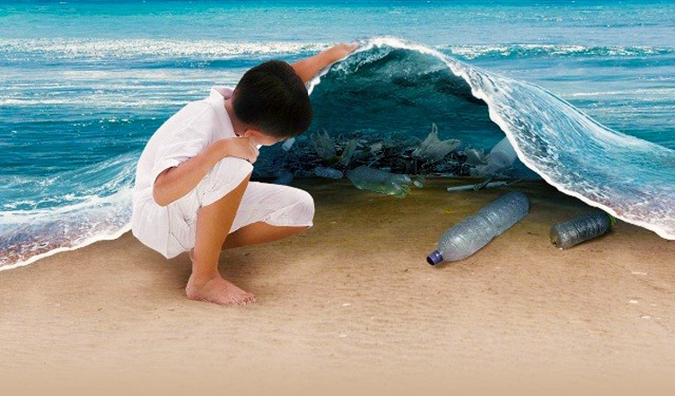
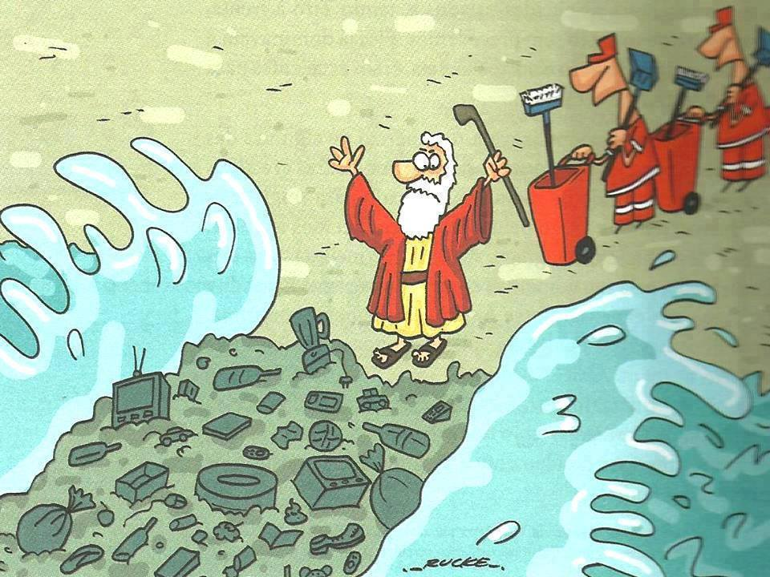

LOS DAÑOS QUE HA SUFRIDO LA TIERRA
Nairobi, 19 de mayo 2016 – El cambio ambiental que afecta al mundo está ocurriendo a una velocidad muchísimo más rápida de lo que antes se pensaba, haciendo imperativo que los gobiernos actúen ahora para revertir el daño que se le ha hecho al planeta, afirma el Programa de las Naciones Unidas para el Medio Ambiente, PNUMA, en las evaluaciones regionales sobre el estado del ambiente global publicadas hoy. Bajo el título Perspectivas del Medio Ambiente Mundial (GEO-6): Evaluaciones Regionales, seis informes separados proveen un estudio altamente detallado de los problemas ambientales que afectan cada una de las seis regiones en el mundo: la región Paneuropea, América del Norte, Asia y el Pacífico, Asia Occidental, América Latina y el Caribe, y África. Publicado previo al inicio de la segunda sesión de la Asamblea de las Naciones Unidas para el Medio Ambiente, UNEA-2 el 23 de mayo en Nairobi, Kenia, las evaluaciones regionales encuentran que a nivel global se comparte una serie de amenazas ambientales comunes que están rápidamente intensificándose en muchas partes del mundo. En casi todas las regiones, el crecimiento de la población, la rápida urbanización, el aumento en el nivel de consumo, la desertificación, la degradación de la tierra y el cambio climático se han combinado para hacer que los países sufran una escasez de agua más severa. Estas preocupantes tendencias también están haciendo cada vez más difícil que el mundo se alimente, advierten los informes, que involucraron 1.203 científicos, cientos de instituciones científicas y más de 160 gobiernos. El Director Ejecutivo del PNUMA, Achim Steiner, afirma: “Hoy en día, gracias a este informe, sabemos mucho más acerca del estado del ambiente en el mundo de lo que sabíamos antes. Con estas evaluaciones, el PNUMA ha presentado al mundo la última evidencia sobre el estado del ambiente en el mundo, dándoles las herramientas que necesitan para anticiparse y evitar el daño que se le está haciendo a nuestro planeta”. "Si las tendencias actuales continúan y el mundo no hace valer soluciones que mejoren los patrones actuales de producción y consumo, y si no utilizamos los recursos actuales de forma sostenible, entonces el estado del ambiente en el mundo continuará declinando. Es esencial que comprendamos la velocidad del cambio ambiental sobre nosotros y que comencemos a trabajar con la naturaleza en vez de contra ella para abordar una gran variedad de amenazas ambientales frente a nosotros”. Las evaluaciones, que se basan en datos científicos y literatura revisada por otros científicos, encuentra que aún hay tiempo para abordar muchos de los peores impactos del cambio ambiental, tales como el daño a los ecosistemas marinos y un aumento en el nivel de la contaminación ambiental, que se ha convertido en uno de los riesgos a la salud ambientales con mayor alcance. En todo el mundo, el cambio climático, la pérdida de biodiversidad, la degradación de la tierra y la escasez del agua son problemas que están creciendo y que deben abordarse urgentemente si el mundo quiere alcanzar las metas establecidas en la Agenda para el Desarrollo Sostenible del 2030, indican los informes. América Latina y el Caribe América Latina y el Caribe es una región biológicamente rica con complejos contrastes políticos, sociales y naturales. Sin embargo, las economías comparten una fuerte dependencia en productos primarios y recursos naturales, que son responsables de alrededor de 50 por ciento de todos los productos de exportación. Las áreas urbanas continúan creciendo junto con las poblaciones, unido con un mayor consumo en la clase media. Esto ha llevado a una situación en la que la calidad del aire en las ciudades ha bajado, las emisiones crecen y el agua y otros recursos naturales están bajo presión. El futuro de las economías en la región depende en gran medida del capital natural de la región, mitigando y adaptándose al cambio climático, y desvinculando el crecimiento económico del consumo de recursos. El informe GEO-6 analiza el estado de la situación en cinco áreas clave, resalta los motores de los impactos ambientales y busca formas para abordarlos. Calidad del aire Las emisiones del gas de efecto invernadero están creciendo en América Latina como resultado de la urbanización, el crecimiento económico, el consumo energético y los cambios en el uso de la tierra, así como otros factores. Estos cambios generan una degradación en la calidad del aire, tanto interno como externo. La mayoría de las ciudades en la región para las cuales hay datos disponibles tienen concentraciones de materia particulada (MP) sobre las directrices de la Organización Mundial de la Salud, OMS. Monterrey en México, por ejemplo, tiene concentraciones medidas de MP2.5 de 85,9, muy sobre el límite recomendado de la OMS de 20. Sin embargo, la región ha hecho progreso en la reducción de sustancias que afectan a la capa de ozono y la eliminación del plomo en la gasolina. En América Latina un estimado de 100 millones de personas viven en áreas susceptibles a la contaminación del aire, en su mayoría en áreas densamente pobladas en la ciudad. En 2012, un total de 138.000 muertes en las Américas (renta baja y media) fueron atribuidas a la contaminación del aire en el ambiente y a la contaminación del aire doméstico. Calidad y acceso al agua Existe una demanda en aumento de agua para la agricultura, industria, generación energética y uso doméstico. Estas demandas, junto con el cambio climático y un aumento en la contaminación, cambian el ciclo hidrológico y los sistemas de recursos de agua. En Meso y Sudamérica ha habido una baja constante en la disponibilidad de agua por persona, debido principalmente al hecho de que la población aumentó de 463 a 606 millones entre 1992 y el 2011. Haití vio caer su disponibilidad de agua fresca de 1.338 metros cúbicos por persona en el año 2007 a 1.297 en el 2014, a la vez que otros países ven una tendencia similar. Aunque el agua superficial es la fuente de agua más común en la región, el uso de agua subterránea ha aumentado. El uso de agua subterránea es especialmente relevante en Argentina, en donde representa un 30 por ciento del total del retiro de agua. Estas tendencias representan una amenaza a los recursos de agua subterránea si no se gestionan apropiadamente. Salud de los océanos, mares y costas La región tiene un territorio marítimo de 16 millones de kilómetros cuadrados y 64.000 kilómetros de línea costera. Aunque algunas de las costas están protegidas por arrecifes coralinos, camas de zacate marino y bosques de manglar, son aún así vulnerables a amenazas naturales y hechas por el hombre. Los desarrollos costeros mal gestionados han creado problemas relacionados con la contaminación del agua de fuentes basadas en la tierra, la degradación de hábitats críticos y la escasez de recursos naturales. Estos impactos afectan negativamente la economía y la sociedad a través de la pérdida de empleo y mayores costos debido a problemas con el estilo de vida y la salud. El cambio climático y su impacto han hecho a las zonas costeras más susceptibles a desastres. Más de 8,4 millones de personas viven en la ruta de huracanes, y aproximadamente 29 millones viven en zonas costeras de baja elevación haciéndolos vulnerables a un aumento del nivel del mar, mareas e inundaciones costeras. Pérdida de hábitat y degradación de la tierra América Latina y el Caribe contiene 12 de los 14 biomas en el mundo y 191 de las 867 ecorregiones únicas del mundo. Estas regiones proveen servicios de ecosistema valiosos – tales como la regulación del agua, el almacenamiento de carbono, alimento y formas de vida. La pérdida y degradación del hábitat continúan siendo uno de los mayores retos en la región. La deforestación en el Amazonas y en otros ecosistemas forestales, menos tierras de pastizales y biomas montañosos frágiles son ejemplos de estos procesos de degradación. A su vez, la degradación del hábitat baja los servicios en el ecosistema, sus funciones y biodiversidad, amenazando el desarrollo y el bienestar humano. Del 2001 al 2013, un 17 por ciento de nuevas tierras arables y un 57 por ciento de nuevos pastizales en la región fueron establecidos en áreas forestales deforestadas para este propósito. Para el 2012, la región tenía un estimado de 1,01 millones de kilómetros cuadrados dedicados a la agricultura y 3,59 millones a pastizales. La amplia degradación de los ecosistemas terrestres en la región es en su mayoría el resultado de una insostenible gestión de la tierra. La demanda regional e internacional para cosechas alimentarias, ganado, madera, petróleo y minería, junto con las condiciones socioeconómicas adversas y la necesidad de inversión extranjera, ejerce una presión en los legisladores para priorizar las metas a corto plazo que podrían resultar en una degradación de la tierra. Biodiversidad América Latina y el Caribe dan soporte a una rica diversidad biológica, que es responsable de un 60 a un 70 por ciento de toda la vida conocida en la Tierra. La amplia diversidad de ecosistemas provee servicios críticos para dar soporte al desarrollo económico y garantizar una buena calidad de vida. Sin embargo la biodiversidad de la región continúa estando amenazada, poniendo muchos ecosistemas y especies en riesgo. El cambio en el uso de la tierra continúa siendo la mayor amenaza, sin embargo otras presiones como la contaminación, la sobre cosecha, el cambio climático, el turismo insostenible y la invasión de especies extranjeras continúan exacerbando los ecosistemas ya estresados. Los patrones insostenibles de producción y consumo y una mayor demanda de alimentos y materia prima continúan poniendo mayor presión en los ecosistemas de la región. Aunque la tasa de deforestación regional se ha reducido, la región aún pierde cerca de 2,18 millones de hectáreas de sus bosques en forma anual. Los datos muestran que aunque la tasa de conversión de los sistemas naturales ha comenzado a ser más lenta, la tasa general de pérdida de los ecosistemas sigue siendo alta. La continua pérdida de biodiversidad en la región está determinada a tener consecuencias de largo alcance. La pérdida de biodiversidad tiene consecuencias directas para el bienestar económico y social de los 630 millones de habitantes de la región, y su impacto se percibirá a nivel global. Recomendaciones generales para la región Los gobiernos necesitarán encontrar soluciones innovadoras para permitir la desvinculación del crecimiento económico con el consumo de recursos. Reducir la dependencia de combustibles fósiles, y la diversificación de las fuentes energéticas será importante para la región. Un área adonde este tipo de pensamiento será crítica es en el contexto de la urbanización. Los gobiernos necesitan invertir en una resistencia basada en el ecosistema para poder reducir la vulnerabilidad y aumentar la adaptación. Una mayor inversión en investigación, y la creación de la capacidad necesaria para recolectar y aplicar datos para fortalecer la interfaz ciencia-política, deberá ser una prioridad para la región. Una coordinación intergubernamental más fuerte y enfocada a nivel regional y subregional mejorará los temas de gobernabilidad que son de prioridad regional. El Programa de las Naciones Unidas para el Medio Ambiente (PNUMA) es la voz del medio ambiente dentro del sistema de las Naciones Unidas. Establecido en 1972, la misión del PNUMA es la de proporcionar liderazgo e impulsar las alianzas para el cuidado del medio ambiente a través de inspirar, informar y permitir a las naciones y las personas mejorar su calidad de vida sin comprometer la de las generaciones del futuro. El PNUMA es defensor, educador, catalizador y facilitador de la promoción del uso responsable de los recursos naturales para el desarrollo sostenible. Trabaja con muchos socios, entidades de la ONU, organizaciones internacionales, gobiernos nacionales, organizaciones no gubernamentales, empresas, industria, sociedad civil y medios de comunicación. El trabajo del PNUMA proporciona apoyo para: la evaluación medio ambiental; el fortalecimiento legal e institucional y las políticas medio ambientales; el uso sostenible y la gestión de los recursos naturales; la integración del desarrollo económico y la protección medio ambiental; y promoviendo la participación pública en la gestión del medio . 